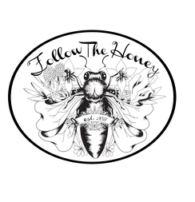

IN HIVE WE TRUST
Follow The Honey Inc. travels the world to bring "transparency of source" honeys and bee-inspired offerings to you and your sweet ones.
In addition to raw untreated honeys of local, regional and global forage - Follow The Honey offers beeswax candles, mead kits, honeyed chocolates, books both scholarly and esoteric, propolis tincture, beauty products & more.
We are currently working with the Tanzanian government to bring premium asali [Swahili for honey] to the USA that is cultivated from the baobab, miambo, mango, sunflower, itigi thicket, acacia, & other indigenous varietals pollinated by the nyuki [bee in Swahili] in pristine remote areas of African forage.